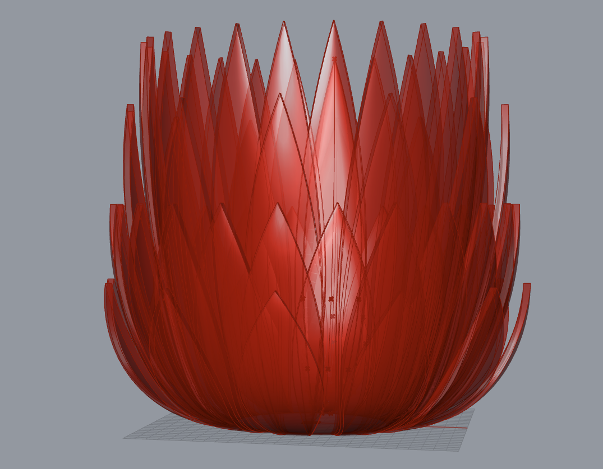

Assignment 5: Getting Meshy! and Lamps!
Jessica Douma | HCDE 533 | Autumn 2022

Part 1: Let's Get Meshy
These week we had to explore modifying meshes to produce a single printable STL that pass all the checks for rapid prototyping. I explored Thingiverse for about 30 minutes looking through different objects hoping to spark an idea of what I wanted to create. I ended up finding some cute pokemon and decided to start there. I went through the following steps to create my modified mesh:

1. Imported the bulbasaur STL from Thingiverse into Rhino and verifiied that it was a closed mesh. |
2. Drew a large box and positioned it above bulbasaur using the Gumball tool, such that it intersected the top of him. |
3. Ran the MeshSplit command on the objects to remove the top part of bulbasaur, using the box as the cutting object. |

4. Step 3 left me with an open mesh, so ran the Cap command on my updated bulbasaur to close it. |

5. Imported one of the cactus STL's from Thingiverse into Rhino and verified that it is a closed mesh. When importing, I chose the split disjoint mesh option so that I could easily remove the pot. |

6. The cactus was very detailed, so I ran the QuadRemesh command on it, with a target polygon count of 2000, and reduced it from ~114,000 polygons to ~11,000. |

7. The cactus was a lot larger than the bulbasaur at this point, so I scaled it down using the Scale command to scale it down by a factor of 0.8. |
8. Next, I rotated, positioned, and angled the cactus over bulbasaur using the Gumball tool such that it was coming out the top of his shell. |

9. Lastly, I ran the MeshBooleanUnion command on the two meshes to combine them and re-verified that the mesh was still closed. I then rendered the object to look at my creation and exported it as an STL. |
Part 2: Getting Started with Our Lamps
I have a lot of ideas for my lamp, so for this week I wanted to explore them all and understand how feasible they'd be. I came across a couple pine cone lamp shades and decided to investigate to see how easy/difficult something similar, but more flowery looking would be. I started looking about ways I might model leaf or petal like shapes, knowing that I wanted to design my lamp parametrically, and found this YouTube tutorial. I thought this was a great place to get started cause the shapes were nothing like I wanted, but the the tutorial would help me understand how to get there, thereby ensuring that I understood the content. I watched the tutorial and went through the steps, trying to see if this would give me me the outcome I wanted so that I could design the base of the lamp.
Using the YouTube video as a guide to get started, I was able to create a leaf like shape that I could easily manipulate and change using bezier curves and different multipliers to increase the size and angles of each leaf. I then extruded the surface to create a 3D shape and entered the geometry into a polar array where I could vary the number of leaves in the ring. While I waited for some prints to finish up, I kept messing around with my grasshopper definition. I copy and pasted the script multiple times so that I could visualize what the final lamp would look like and was really pleased with the level of custimizability and how much room I had to play. The only bummer was that if I wanted to print the lamp shade as a single piece, Cura estimated the print as needing 2 days and 8 hours to complete :'). Printing each row individually though wasn't a huge deal; instead of having one tube that all of the leaves connected to, I would just have each row connect to its own tube, which could then be stacked to build each layer of the lamp. Happy with the results and confident in my proof of concept, I turned my focus to the base of the lamp, since that was the remaining piece.

To start planning the base, I decided that my lamp would be a table lamp rather than a hanging lamp, which meant that my base has to allow the lamp innerds to sit inside of it and support it upright, while also allowing the cord to easily bend and exit out the bottom so that it could sit flat on the table. I decided to start by designing the inner support first. I measured the lamp innerds and found that the top was 37.2mm wide and 40mm tall before it started to taper. I drew a tube that was 38.5mm wide and 40mm tall intended for the base of the lamp to slide through with some wiggle room. I then drew two truncated cones, one slightly larger than the other, and used the smaller one to cut the larger one, forming a conular shape that the cord could go through, and that would support the bottom of the lamp to keep it from falling through. I then joined the two resulting objects, exported the object as an STL, and ran a test print using Cura. Surprisingly, I got this right on the very first try which was awesome! I wanted to play around with different tapers of the bottom cone shape, but figured I'd leave that to the end, time-permitting.

With my inner lamp supporing piece ready, I couldn't move on to finishing the rest of the base until I knew how big the disks holding the leaves together were going to be. I ran a test print, with a tube large enough to clear my lightbulb and wide enough to hold the leaves together. I stopped the print when I realized that the part of the leaf that connected to the tube was only one line thick... this wasn't offering any support and when I removed the supports I was able to super easily snap off each leaf (first picture below). I realized that this was because of how my leaf was being extruded. While the top edge of the leaf was 3mm thick, the bottom of the leaf was converging to a single curve, as shown in the second picture below. While I could artificially fix this by make my disk wider so that the thinnest part of the leaf was encapsulated by it, I didn't love that the piece could still potentially snap with bad handling (picture 3 below).


After much trial and error in both Grasshopper, I couldn't get the surface to extrude the way I wanted to... one edge was always super thin no matter what I tried. Eventually, I turned to Rhino to try and figure out a solution. I baked the non-extruded surface from my Grasshopper script and started manipulating it in Rhino. I tried so many commands to try and get a closed solid polysurface (multiple variations of lofting, merging edges, merging surfaces, capping open polysurfaces...) and nothing worked. Finally, after about an hour of no progress, I tried the DevLoft command to loft each edge of the surface and this gave me a closed polysurface *as I cried with tears of joy*.
It was awesome that I found a solution, but I wasn't quite sure how to convert that to Grasshopper.. so I figured that I would use Grasshopper to create my surfaces and to visualize the final product, and would manually loft each surface (one for each layer of the lamp) in Rhino myself, and then generate a polar array for it in Rhino. While this was a few more manual steps than I was hoping for, it seemed to work and my test print with the new leaf design looked great! I kicked off a print consisting of the entire layer, with all 8 leaves, but that's going to take 12 hours to print so stay tuned 😉

Source Files
Let's Get Meshy Source Files
Bulbasaur mesh from Thingiverse
Cactus mesh from Thingiverse
Rhino file w/ combined meshes
Combined meshes exported as STL
Lamp Source Files
Grasshopper file to generate one ring of leaves
Grasshopper file to generate multiple rings of leaves to visualize the final lamp shade piece
Rhino file containing the lamp support piece
Rhino file containing the leaves I manually lofted
Acknowledgements
Emily Rowland for going through the mesh assignment with me.
Junchao for his help during office hours.